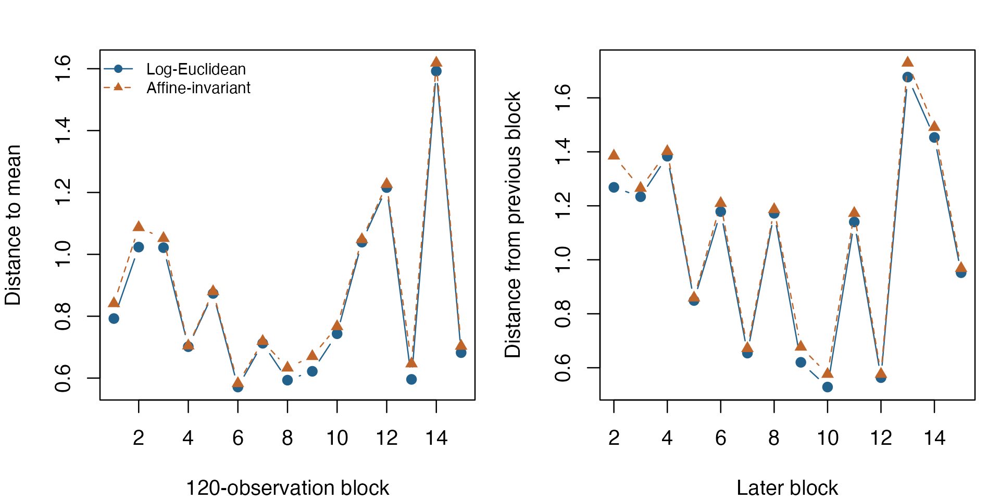

Average covariance matrices geometrically
Source:vignettes/articles/example-covariance-means.Rmd
example-covariance-means.RmdCovariance matrices describe both variation and relationships among variables. Their geometric average depends on the distance used. This example forms covariance matrices from successive blocks of historical stock-index returns, then minimizes squared distances under two SPD metrics.
For a smaller introduction, see the
two-matrix SPD example. The geometry and metrics guide
introduces manifold.spd(), riem.sqdist(), and
riem.log(). The application illustrates how the choice of
geometry changes a covariance summary.
Data and covariance blocks
R’s EuStockMarkets
dataset records 1,860 successive business-time observations for DAX,
SMI, CAC, and FTSE from 1991–1998. We use percentage log returns,
,
rather than prices. The data have no missing values. See Data sources and reproducibility
for attribution.
Divide the 1,859 return observations into 15 nonoverlapping blocks of 120; discard the final 59 returns so that all blocks have equal size. For each sample covariance , use . This fixed shrinkage stabilizes eigenvalues while preserving trace. It is a preprocessing choice, not a tuning parameter selected from these results.
prices <- as.matrix(datasets::EuStockMarkets)
returns <- apply(log(prices), 2, diff) * 100
block_size <- 120L
block_count <- nrow(returns) %/% block_size
blocks <- lapply(seq_len(block_count), function(i) {
rows <- (i - 1L) * block_size + seq_len(block_size)
covariance <- cov(returns[rows, , drop = FALSE])
covariance * 0.95 + diag(sum(diag(covariance)) / ncol(returns),
ncol(returns)) * 0.05
})
stopifnot(!anyNA(returns), block_count == 15,
all(vapply(blocks, function(C) min(eigen(C, symmetric = TRUE)$values) > 0,
logical(1))))
data.frame(return_observations = nrow(returns), complete_blocks = block_count,
observations_per_block = block_size,
discarded_returns = nrow(returns) %% block_size)
#> return_observations complete_blocks observations_per_block discarded_returns
#> 1 1859 15 120 59Objective and metric
For either distance , solve
The log-Euclidean metric measures the Frobenius distance between matrix logarithms. The affine-invariant metric measures the logarithm after whitening one matrix by the other. Both keep iterates positive definite, but they give different means. For either metric the Riemannian gradient of this objective is , allowing an explicit gradient callback.
tensor_blocks <- lapply(blocks, torch_tensor, dtype = torch_float64(), device = "cpu")
make_problem <- function(metric) {
M <- manifold.spd(4, metric = metric)
riem.problem(
M,
function(G, data) {
Reduce(`+`, lapply(data, function(C) riem.sqdist(M, G, C))) / (2 * length(data))
},
rgrad = function(G, data) {
-Reduce(`+`, lapply(data, function(C) riem.log(M, G, C))) / length(data)
},
data = tensor_blocks
)
}
problems <- list(log_euclidean = make_problem("lerm"),
affine_invariant = make_problem("airm"))
arithmetic <- Reduce(`+`, blocks) / length(blocks)
initial <- torch_tensor(arithmetic, dtype = torch_float64(), device = "cpu")All data tensors are registered with their problems, so moving a solve to a different device also prepares these matrices on that device. The arithmetic mean provides the same valid starting point for both optimizations.
fits <- lapply(problems, function(problem) {
riem.optimize(problem, initial, method = "steepest_descent", device = "cpu",
control = list(max_iterations = 60, gradient_tolerance = 1e-7))
})
means <- lapply(fits, function(fit) as.matrix(fit$point))
data.frame(metric = names(fits),
objective = vapply(fits, function(fit) fit$objective, numeric(1)),
iterations = vapply(fits, function(fit) fit$iterations, numeric(1)),
gradient_norm = vapply(fits, function(fit) fit$gradient_norm, numeric(1)),
termination = vapply(fits, function(fit) fit$termination, character(1)))
#> metric objective iterations gradient_norm
#> log_euclidean log_euclidean 0.4004717 1 2.820303e-15
#> affine_invariant affine_invariant 0.4231704 4 8.842760e-09
#> termination
#> log_euclidean converged_gradient
#> affine_invariant converged_gradientEach objective uses its own metric, so a smaller value across these two rows does not by itself indicate a better fit. Check the termination reason as well as the gradient norm: an iteration budget is not mathematical convergence.
Independent numerical checks
For the log-Euclidean metric, the exact solution is . Recalculate it with base R’s symmetric eigendecomposition, independently of torch’s matrix operations.
matrix_function <- function(C, fun) {
decomposition <- eigen((C + t(C)) / 2, symmetric = TRUE)
decomposition$vectors %*% diag(fun(decomposition$values)) %*%
t(decomposition$vectors)
}
log_average <- Reduce(`+`, lapply(blocks, matrix_function, fun = log)) / length(blocks)
log_reference <- matrix_function(log_average, exp)
log_reference_error <- norm(means$log_euclidean - log_reference, "F") /
norm(log_reference, "F")For the affine-invariant mean, there is generally no corresponding closed-form matrix average. Instead, verify positive definiteness and stationarity. Whitening at turns its stationarity condition into ; the Frobenius norm of this expression is the metric gradient norm. Compute it again using base R.
inverse_root <- matrix_function(means$affine_invariant, function(x) x^(-0.5))
whitened_logs <- lapply(blocks, function(C) {
matrix_function(inverse_root %*% C %*% inverse_root, log)
})
airm_stationarity <- norm(Reduce(`+`, whitened_logs) / length(blocks), "F")
smallest_eigenvalues <- vapply(means, function(G) {
min(eigen(G, symmetric = TRUE)$values)
}, numeric(1))
stopifnot(log_reference_error < 1e-7, airm_stationarity < 1e-6,
all(smallest_eigenvalues > 0),
abs(airm_stationarity - fits$affine_invariant$gradient_norm) < 1e-8,
all(vapply(names(fits), function(name) {
riem.belongs(problems[[name]]$manifold, fits[[name]]$point)
}, logical(1))))
data.frame(check = c("Relative log-Euclidean reference error",
"Independent affine-invariant stationarity",
"Smallest log-Euclidean eigenvalue",
"Smallest affine-invariant eigenvalue"),
value = c(log_reference_error, airm_stationarity, smallest_eigenvalues))
#> check value
#> 1 Relative log-Euclidean reference error 1.185082e-15
#> 2 Independent affine-invariant stationarity 8.842760e-09
#> 3 Smallest log-Euclidean eigenvalue 2.651884e-01
#> 4 Smallest affine-invariant eigenvalue 2.671864e-01Compare the averages and block distances
The heatmaps share one color scale and label each covariance in squared percentage log-return units. The arithmetic mean is included as a familiar reference.
panels <- c(list(Arithmetic = arithmetic),
list(`Log-Euclidean` = means$log_euclidean,
`Affine-invariant` = means$affine_invariant))
limits <- range(unlist(panels))
palette <- hcl.colors(60, "YlOrRd")
color_breaks <- seq(limits[1], limits[2], length.out = length(palette) + 1L)
old_par <- par(mfrow = c(1, 3), mar = c(4, 4, 3, 1))
for (name in names(panels)) {
image(seq_len(4), seq_len(4), panels[[name]], col = palette,
zlim = limits, axes = FALSE, xlab = "", ylab = "", main = name, asp = 1)
axis(1, seq_len(4), colnames(prices), cex.axis = 0.8)
axis(2, seq_len(4), colnames(prices), cex.axis = 0.8, las = 2)
values <- as.vector(panels[[name]])
cell_colors <- palette[findInterval(values, color_breaks, all.inside = TRUE)]
brightness <- drop(c(0.299, 0.587, 0.114) %*% col2rgb(cell_colors))
text(rep(seq_len(4), times = 4), rep(seq_len(4), each = 4),
labels = formatC(values, format = "f", digits = 2),
col = ifelse(brightness > 145, "black", "white"), cex = 1)
}
The arithmetic and two geometric means use the same color scale; cell labels give covariances in squared percentage log-return units.
par(old_par)Distances between consecutive blocks reveal changes in covariance, while distances from a mean summarize variation around a chosen center. These are descriptive geometric distances, not tests of structural change.
distance_to_mean <- sapply(names(problems), function(name) {
vapply(tensor_blocks, function(C) {
as.numeric(riem.dist(problems[[name]]$manifold, fits[[name]]$point, C))
}, numeric(1))
})
consecutive_distance <- sapply(problems, function(problem) {
vapply(seq_len(block_count - 1L), function(i) {
as.numeric(riem.dist(problem$manifold, tensor_blocks[[i]], tensor_blocks[[i + 1L]]))
}, numeric(1))
})
old_par <- par(mfrow = c(1, 2), mar = c(4, 4, 2, 1))
colors <- c("#21618C", "#C0652A")
matplot(seq_len(block_count), distance_to_mean, type = "b", pch = c(19, 17),
lty = 1:2, col = colors, xlab = "120-observation block", ylab = "Distance to mean")
legend("topleft", c("Log-Euclidean", "Affine-invariant"), col = colors,
lty = 1:2, pch = c(19, 17), bty = "n", cex = 0.75)
matplot(2:block_count, consecutive_distance, type = "b", pch = c(19, 17),
lty = 1:2, col = colors, xlab = "Later block", ylab = "Distance from previous block")
Left: each block’s distance from its corresponding geometric mean. Right: distances between consecutive blocks.
par(old_par)The block length and shrinkage affect these results. Blocks follow the stored business-time order, rather than exact calendar semesters. Both geometric means are SPD, but an averaging geometry is a modeling choice. The independent checks establish solutions to the stated optimization problems. Assessing other block lengths and shrinkage levels would help distinguish changes in the data from effects of preprocessing.
CPU float64 is explicit throughout. These alternatives illustrate device discovery and overrides without assuming accelerator hardware is available. See Applications and devices for capability checks.
riem.optimize(problems$affine_invariant, initial, device = "auto")
riem.optimize(problems$affine_invariant, initial, device = "cpu")
riem.optimize(problems$affine_invariant, initial, device = "cuda:0")